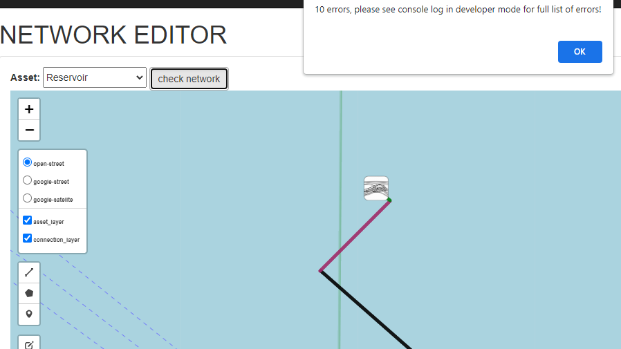
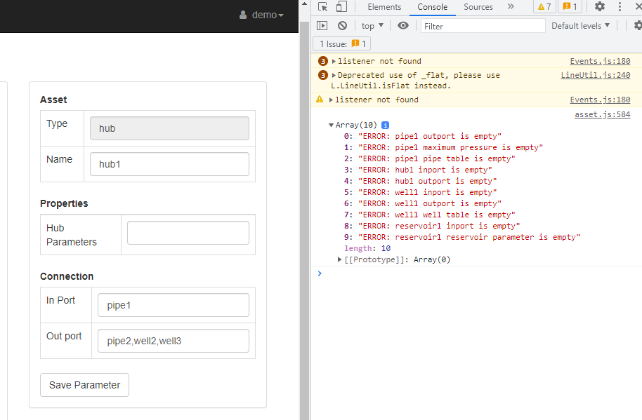

5. Drawing the network
5.1. Network Component
A valid network consist of at least:
1 compressor
1 pipe
1 hub
1 well
1 reservoir
There are two types of geometry: a line and a marker. Compressor, Valve and Reservoir is modelled as a marker; Pipe, Well, and Hub is modelled as a line
{kind=link}
5.3. Add the component
5.3.1. Compressor
Select component from drop down list, for example compressor
Click add marker symbol
Place the compressor in the desired location

5.3.2. Pipe
Select Pipe from drop down list
Click add line symbol
Start place pipe from compressor
End the pipe by clocking the white square end point
{kind=link}
5.3.3. Hub
Select Hub from drop down list
Click add line symbol
Start place hub from pipe
End the hub by clicking the white square end point

5.3.4. Well
Select Well from drop down list
Click add line symbol
Start place well from hub (since the well is vertical, this is a diagram only)
End the well by clicking the white square end point
{kind=link}
5.3.5. Reservoir
Select Reservoir from drop down list
Click add marker symbol
Place the reservoir at the end of the well
{kind=link}
5.4. Connect the components
The components that are placed in the network needs to be connected to each other. Below you can see how to connect each component.
5.4.1. Compressor to Pipe
Select compressor
Fill the outport of the compressor with pipe’s name: pipe1
Don’t forget to click Save Parameter

5.4.2. Pipe to Hub
Select pipe. Since we already connect comporessor with pipe, the inport is already filled in.
Fill the outport of the pipe with hub’s name: hub1
Don’t forget to click Save Parameter

5.4.3. Multiple connection
You can continue to connect the rest of components (hub, well, reservoir). It is also possible to have multiple components connected via a Hub.
for example a hub connected to pipe2,well1,well2 (using comma)

5.5. Checking a network
You can check the connection using network validation by clicking Check Network. It is not only checking the network connection, but also if there is missing parameter (we will discuss in the next session)
It will show a popup window regarding number of errors. The full list of errors in shown the console of your browser
 {kind=link}
{kind=link}
Here is how to open error console in the Google Chrome
Click 3 dots in the right top corner
Select More tools
Click Developer tools
{kind=link}
5.6. Set component static parameters
You can just easily click the component and fill the static parameter field and press Save Parameter
These are the list of required parameters for each component:
5.6.1. Compressor
None
5.6.2. Reservoir
{kind=link}
5.6.3. Pipe
Pipe Maximum Pressure (if there is no pressure limit, put value 0)
Pipe Table in .xlsx file consist of 5 columns (Flow rate, Inlet Pressure, Inlet enthalpy, Outlet Pressure, Outlet enthalpy)
Note: The simulator will not do any extrapolation, please make sure the flow rate and pressure range is covered.

Download pipetable example:
xlsx
5.6.4. Well
Well Table in .xlsx file consist of 5 columns (Flow rate, Inlet Pressure, Inlet enthalpy, Outlet Pressure, Outlet enthalpy)
Note: The simulator will not do any extrapolation, please make sure the flow rate and pressure range is covered.

Download welltable example:
xlsx
5.6.5. Hub
None